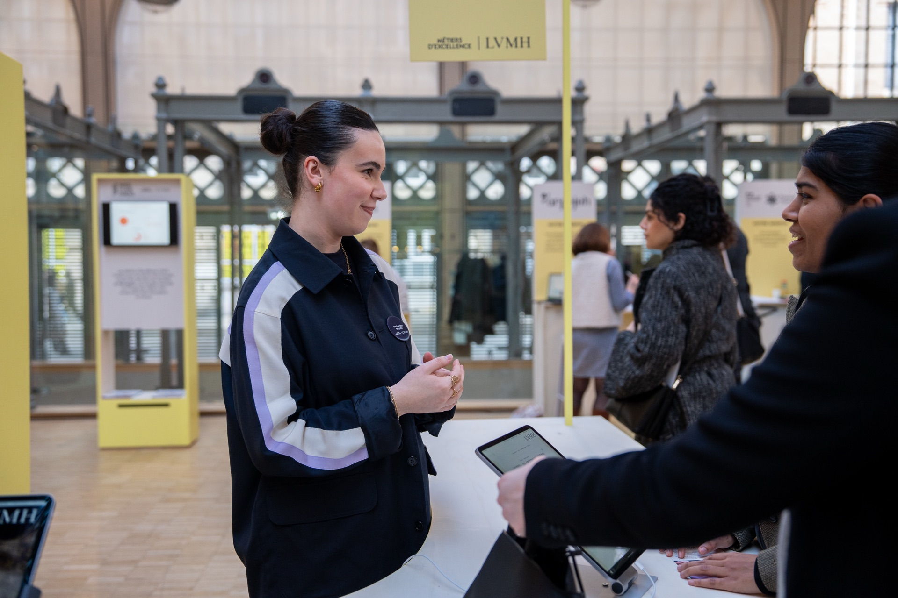
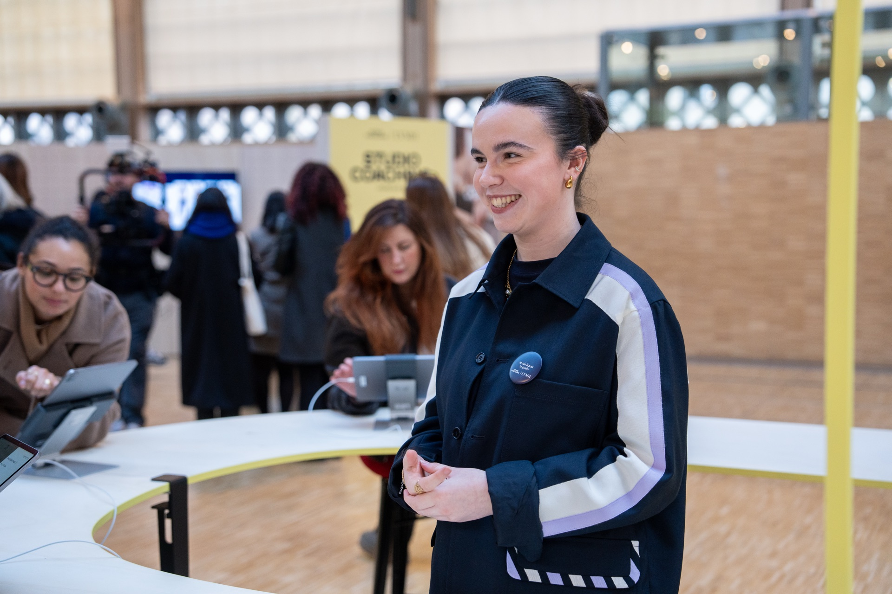
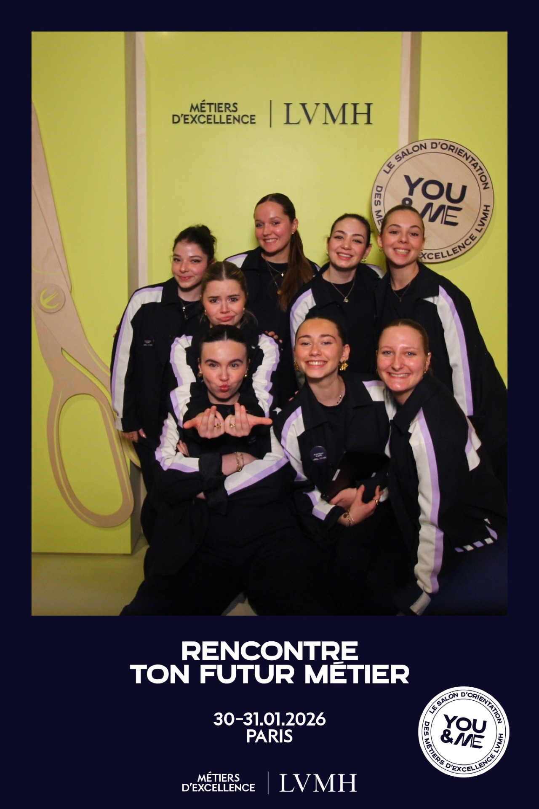

Ambassadrice — Tournée nationale LVMH
You & Me
LVMH
Sélectionnée via le LAB ISEFAC Lille pour rejoindre la tournée nationale You & Me de LVMH. Un rôle d'ambassadrice centré sur l'orientation des visiteurs et l'accompagnement vers les opportunités d'emploi du groupe.



Le projet
Une sélection et une mission de terrain au sein d'un groupe mondial
La tournée nationale You & Me est l'initiative de LVMH pour aller à la rencontre du public sur tout le territoire et présenter les opportunités d'emploi et d'alternance au sein du groupe. Un dispositif itinérant, porté par des ambassadrices sélectionnées pour leur aisance relationnelle, leur sens de l'accueil et leur connaissance des offres.
J'ai été sélectionnée via le LAB ISEFAC Lille pour participer à cette tournée — une sélection qui représente en elle-même une reconnaissance du sérieux et de l'engagement dont j'ai fait preuve dans mes projets associatifs. Cette expérience m'a directement plongée dans un environnement professionnel à l'échelle d'un groupe international.
Le public rencontré lors de la tournée était extrêmement varié : étudiants en recherche de stage ou d'alternance, profils en reconversion professionnelle, cadres en transition de carrière. Chaque interaction demandait une adaptation rapide du discours et une écoute active pour orienter chaque personne vers l'offre la plus pertinente pour son profil.
Mes missions
Ambassadrice : accueil, orientation, guidage
- Accueil du public sur les différentes étapes de la tournée nationale
- Présentation des offres d'emploi, d'alternance et de stage disponibles au sein du groupe LVMH
- Guidage des visiteurs sur les outils numériques LVMH : plateformes de recrutement, candidatures en ligne
- Adaptation du discours à des profils très variés : étudiants, reconversions professionnelles, cadres
- Orientation personnalisée selon les compétences, les ambitions et le parcours de chaque visiteur
- Représentation de l'image et des valeurs du groupe LVMH lors des échanges publics
Bilan
Relationnel, adaptabilité, représentation
Être ambassadrice pour LVMH, c'est être le premier visage que les gens rencontrent quand ils envisagent de rejoindre un groupe de cette envergure. Cette responsabilité m'a appris à soigner chaque interaction, à être précise dans mes informations et à incarner une image professionnelle cohérente avec les valeurs du groupe.
La diversité des profils rencontrés a été particulièrement formatrice. Passer en quelques minutes d'un dialogue avec un étudiant en première année à un échange avec un cadre expérimenté en reconversion demande une flexibilité et une intelligence situationnelle que cette expérience m'a permis de développer concrètement.
Cette expérience a aussi renforcé mon intérêt pour les dispositifs événementiels au service de la marque employeur — un domaine où l'événementiel et les ressources humaines se rejoignent pour créer de véritables moments de rencontre entre une organisation et ses futurs talents.